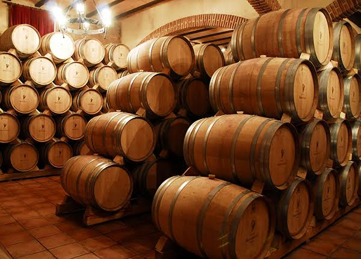

El añejamiento de destilados: mitos y verdades
El mundo de los destilados está lleno de rituales y creencias, pero pocos elementos generan tanta curiosidad como la madera. Al momento de elegir un whisky, un ron o un pisco de guarda, solemos asociar el tiempo en barrica con calidad indiscutible. Sin embargo, el paso de los años en madera encierra realidades que van más allá del simple número impreso en la etiqueta.
